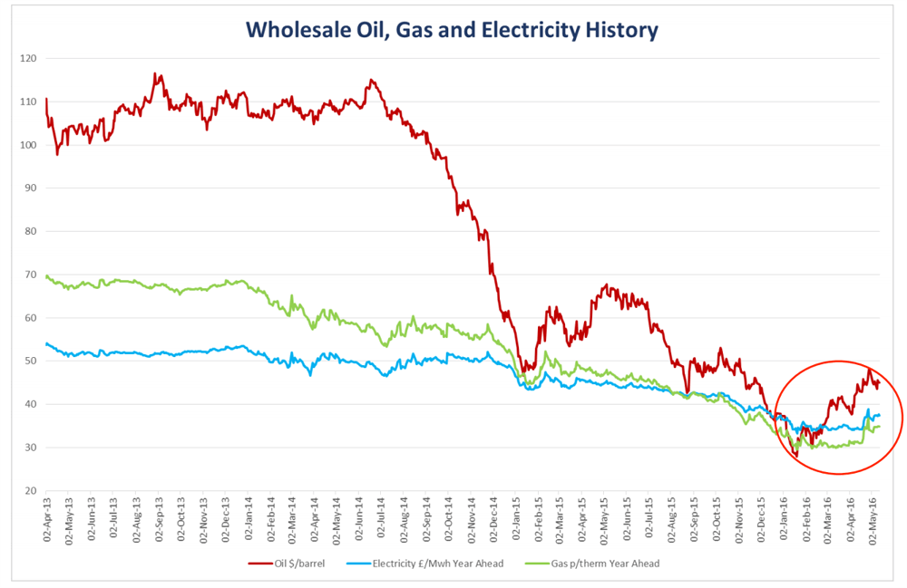

Energy Market Review – 31st May 2016
by James Summerbell and Giles Hankinson, CEOWholesale Electricity Prices and Non-Commodity Costs are Rising
The Wholesale Electricity Price is rising. After almost two years of decline, we are now seeing regular price increases. This is a consistent trend, and one that we believe will continue (see Fig.1 below).  Fig. 1
Macro & Microeconomic Changes are Forcing Prices Up
Why is this happening? Well, a number of things have changed in recent months. Firstly at the Macro Economic level, the low oil prices of the last two years have forced many new sources of unconventional oil (for example, shale and tar sands) to shut down their operations. Next, OPEC (the cartel controlling the majority of output in the Middle East and Africa) has imposed a freeze on production at current levels, despite having in recent times let members produce as much as they wanted to. Finally, the IEA (International Energy Agency) has revised its forecast for global oil demand, driven by unexpectedly strong growth in gasoline demand in several key markets.
These factors have resulted in oil nearly doubling in price to US$50/barrel, since the US$27/barrel low point in January.
Secondly, at the Microeconomic level, several coal-fired power stations have closed (or are closing). This means, that dependent upon demand factors, there may be periods over this winter when the balance of demand with electricity generated, becomes very tight. When this happens, prices increase – this can already be seen in this winter’s wholesale electricity price.
Sentiment in the market is bullish. Traders believe prices are more likely to rise than fall. Only last week, JP Morgan revised its forecast Oil price to almost US$60.
The warning signs are there. All factors suggest, that the current low price being enjoyed by the market is temporary.
Actual Energy now only represents 40% of the cost of every Kwh
Don’t be fooled into thinking that the price you are paying for every Kwh is the energy cost. It isn’t. In fact, only around 40% of the cost of every single Kwh you pay for, is actual energy. The remaining 60% consists of levies, taxes and other pass-through charges. These are called Non-commodity Costs. So-called ‘Non-commodity’ costs, are mostly made up of a combination of the costs to transport the electricity to your meter (the costs of running the National Grid and your local distribution network) and the costs of subsidies and taxes to support renewables and climate change targets. All these charges are either regulated or set by the government, so they are non-negotiable. We don’t believe they are going down any time soon. As you can see from the data in Fig.2 below, most are actually increasing.
| £ | % | Forecast | |
|---|---|---|---|
| Wholesale Energy Costs (incl. Losses) | 374,000 | 41% | |
| Supplier Costs (incl. margin and risk) | 35,000 | 4% | |
| Transmission Charges (TNUoS) | 82,600 | 9% | |
| Transmission Charges (TNUoS) | 112,000 | 12% | |
| Balancing Use of System Charges (BSUoS) | 24,200 | 3% | |
| Renewables Obligation | 155,800 | 17% | |
| Feed-in Tariff | 52,000 | 6% | |
| Climate Change Levy | 55,900 | 6% | |
| Contracts for Difference (CfD) | 9,500 | 1% | |
| Capacity Mechanism (CM) | 1,390 | 0% | |
| Other Charges (Metering, BSC, Hydro) | 3,000 | 0% | |
| Total | 905,390 | 100% |
Fig 2.
These costs have increased substantially in the last few years, mostly driven by the drive to increase renewable generation and decarbonise our electricity system. The increase in these costs has effectively offset the drop in wholesale prices seen in the first graph. The need to replace aging infrastructure, including the previously mentioned coal plants, will continue to drive these costs up – and the way some of them are charged is changing, too.
For example, the Capacity Mechanism (a new scheme which currently makes up a very small part of the bill) will be allocated to consumption during peak times (typically 4-7pm on weekdays), rather than spread evenly across all units. This gives rise to both risk and opportunity: risk if you consume a lot of energy at peak times, opportunity if you are able to shift your electricity consumption to other times of the day.
Summary
Positives
- Global oil reserves remain reasonably high
- Iranian oil output is actively being traded in the mix
- Weather remains relatively mild
- Manufacturing consumption remains moderate to weak
Negatives
- Producing nations are attempting to manipulate output, to force prices upwards
- Venezuelan output is at risk due to political instability
- The market believes prices will increase rather than decrease
- With the reduction in Coal Fired Power Stations coupled with the approaching Winter, supply capacity will become tighter. This will more than likely force prices upwards
- The uncertainty surrounding the EU referendum is impacting both Foreign Exchange markets and hedging strategies. This is putting greater pressure on long term price stability
- Non-commodity costs are expected to increase
Our opinion
We are exceedingly nervous about the market. The sheer level of geo-political uncertainty suggests only upwards movements, with regards energy prices. Several independent elements might singularly or collectively have a material and negative impact on the price of energy in the long term.
Even should wholesale prices drop, we don’t believe delivered prices will be materially affected. Primarily, this is because the energy cost as a percentage of each unit of power, is outweighed by non-commodity costs.
Therefore, our opinion is that if price certainty is a driving factor, then it would be beneficial to secure longer term contracts rather than short term.
In other words, the safety of relatively low prices fixed over a long term contract, far outweighs the risk of chasing the bottom of the market and missing it.
James Summerbell – Member of the UA Advisory Panel/Giles Hankinson - CEO
Disclaimer: This information is provided by Utility Aid Limited (UA) for your benefit only and must not be disclosed without the prior written consent of UA. If you are not the intended recipient, you are not authorised to use the information in the email in any way. UA does not guarantee the integrity of any emails or attached files. All information is indicative only, and does not constitute an offer to transact. The information may be based on assumptions or market conditions and may change without notice. To the extent permitted by law, UA does not accept any responsibility for errors or misstatements, negligent or otherwise, nor for any direct, indirect, consequential or other loss arising from any use of this information and/or further communication in relation to this information.